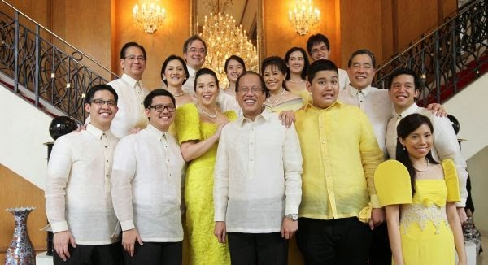

POWER • INFLUENCE • LEGACY
EXPLORE THE FAMILY
Welcome to the Aquino Family Dynasty website. This website presents the history, generations, influence, achievements, controversies, and legacy of the Aquino family.
Through this family tree, visitors can explore the family's background and understand how its members contributed to Philippine society and politics across different generations.
The Aquino Family is one of the most influential political families in the Philippines. Their legacy spans several generations, producing national leaders, senators, legislators, and public servants who have played significant roles in Philippine history. The family's prominence began with Servillano Aquino, a general who fought during the Philippine Revolution, and continued through succeeding generations. His descendants include Benigno Aquino Sr., Benigno "Ninoy" Aquino Jr., former President Corazon Aquino, and former President Benigno "Noynoy" Aquino III. The Aquino family is widely recognized for its contributions to democracy, public service, and national development. Their influence extends beyond politics, as family members such as Kris Aquino became prominent figures in Philippine media and entertainment. Through five generations, the Aquino name has remained closely associated with leadership, civic engagement, and the country's modern political history.